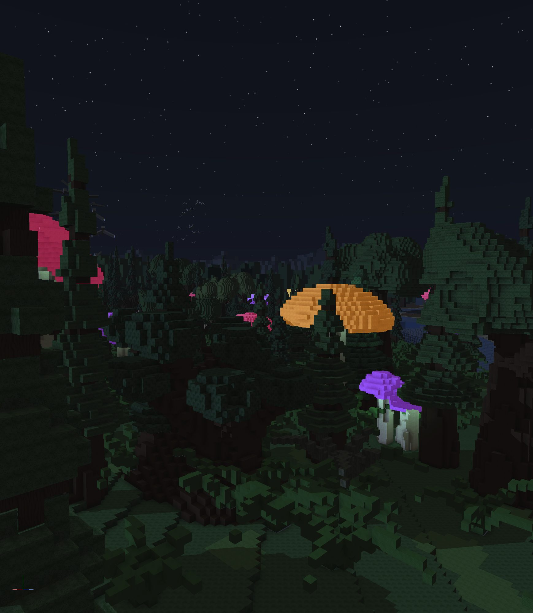
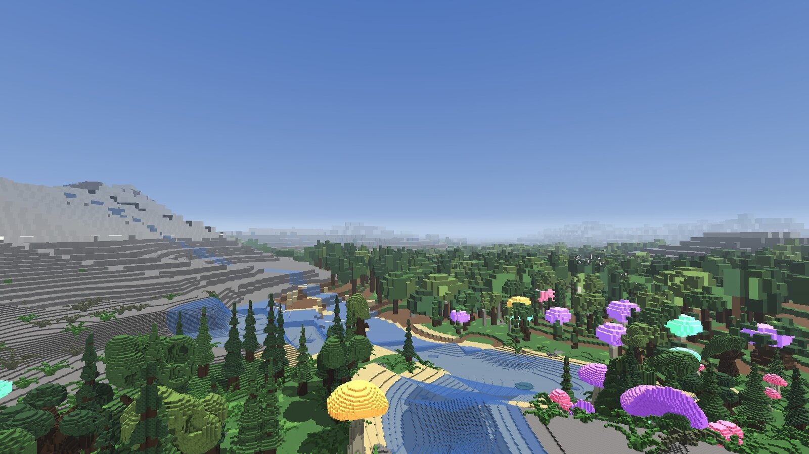
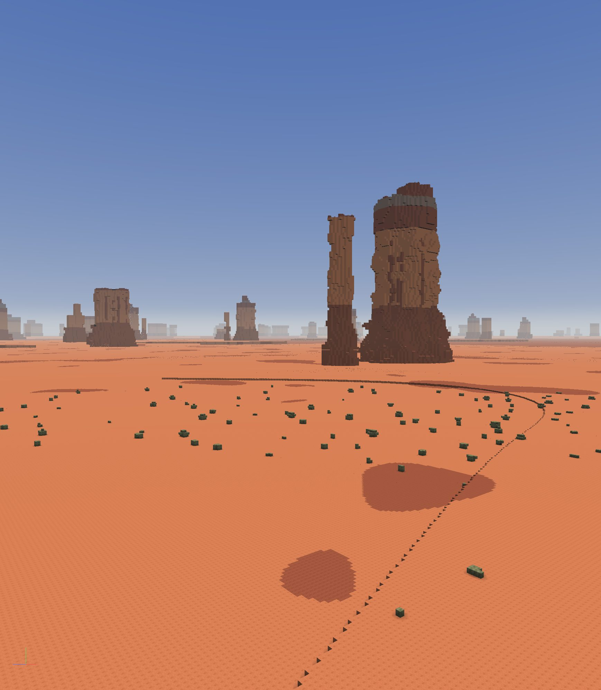

Voxler
A voxel engine that runs in a browser tab. Worlds are made up as you fly through them, so there is nothing to download and no level to load.

It needs WebGPU. Chrome or Edge on desktop, Safari 26 on macOS 26 or iOS 26, or Firefox on Windows or Apple Silicon. An older browser gets a message and nothing else. Give the forest a few seconds on the first load.
What it is
You describe a world with a short program: where the ground is, and what it is made of. Voxler builds it on the graphics card as you move, in detail close up and in bulk far away.
Nothing is stored. The forest above is not a file, it is a few hundred lines, and every tree in it is worked out the moment you can see it.
The worlds


How big
Big enough that you will not reach the end of one. It is 33 million voxels from the middle to the edge, and if a voxel were a metre that would be a world wider than the Earth. Your machine only ever holds the part around you, so flying further costs nothing.
Seeing a long way
Close to you the world is drawn as blocks. Past the point where a block would be smaller than a pixel, it switches to tracing rays through a coarser copy instead. That is why the horizon stays sharp, and why looking a long way costs no more than looking a short way. The buttes on the skyline above are kilometres off.
Controls
- Drag to look. WASD to move, Space and C up and down, Shift to sprint.
- The wheel flies towards whatever the cursor is over, so you can approach something without turning to face it. + and - change the speed.
- On a phone, one finger looks and two fly: drag them up the screen to go forward, across to strafe, and spread them to approach whatever is between them.
- K starts a flyover that follows whatever is under you. Over a river it follows the river.
- Click a bird to pick it out. With one picked, K chases it instead.
- E and Q place and remove blocks. F2 shows what the engine is doing.
Speed
It runs smoothly on ordinary hardware, with nothing turned down: a steady 60 frames a second on a MacBook with an M3 chip, and 120 on a desktop with Intel graphics.
Writing one
A world is two functions in WGSL, and the engine is one object that takes them. The get-started page has a world small enough to read, running and editable on the page, and the whole API under it.